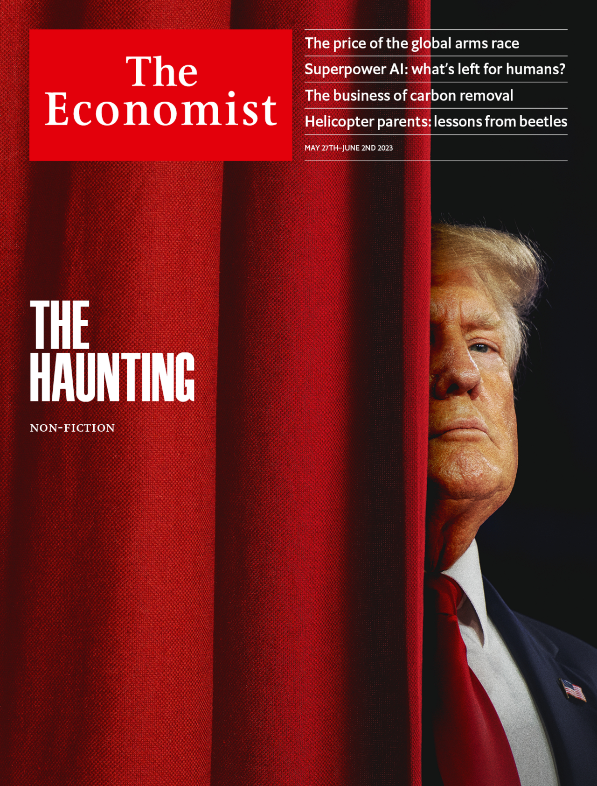

This Linear regression model was built to predict Car price for different types and brands of car
This task is to classify mall shoppers into clusters, to enable the marketing team target the shoppers with specific Ads to either encourage them to buy more or retain them

This Stochastic Gradient Descent model was built to predict the best time to go to the gym when it will be less crowded
This is a Linear regression model to predict insurance charges for patients The data has Age : The age of the person sex: The sex of the person bmi: The body mass index of the person smoker: Yes for if the person is a smoker, and no if the person does not smoke region: The region of USA the person is in charges: The price for medical insurance per person

This project was made using Python and Beautiful soup to scrape the news headlines from the news site The Economist
This Model was built to predict if a patients Cancer is Malignant or Benign using Supervised Machine learning and assigns 1 for malignant tumors and 0 for Benign tumors, The data was gotten online from Sci-kit learn data on Breast cancer patients